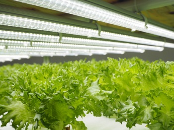
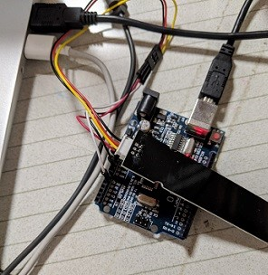
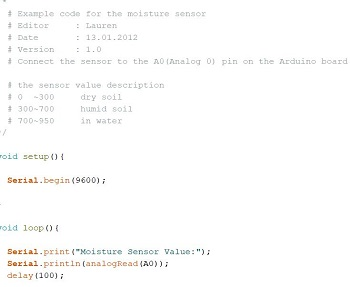
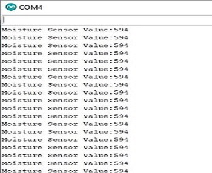
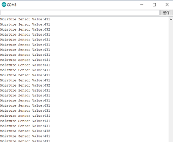
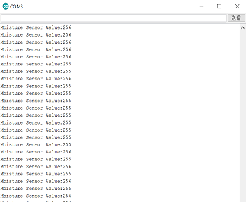

前回移動プランターを作製したが、野菜を育てるという環境が当たり前にあるという訳ではないということに気づきどんな環境でも簡単な野菜を育てられ、持続可能な社会にしていくのが目的
現代では植物工場といい植物を工場内の閉鎖的空間で植物を生産する方法がある

植物工場
この栽培方法は環境に左右されないことが大きな利点である。
近年環境変化が大きくなり私はこれから必要になってくる栽培法だと思う。
しかし工場は存在しても工場のような半自動生産のような家庭用のプランターはないと思った。
使うもの
・Arduino
・プランター
・LEDライト
・土壌センサ
土壌水分センサーを購入し接続例に従ってジャンパーワイヤーを使いArduinoに接続した。しかしArduinoの設定を変更していないためセンサーが反応しなかった。

ネットで土壌センサーのプログラムを持ってきたらセンサーは反応したが正しい数値を出しているかがわからない

土の中に入れ数値を計ったが数値が一向に変わらず苦戦した。
配線やプログラムなど何度も確認したが動かなかった為購入しなおしたらうまく数値が変更した。
